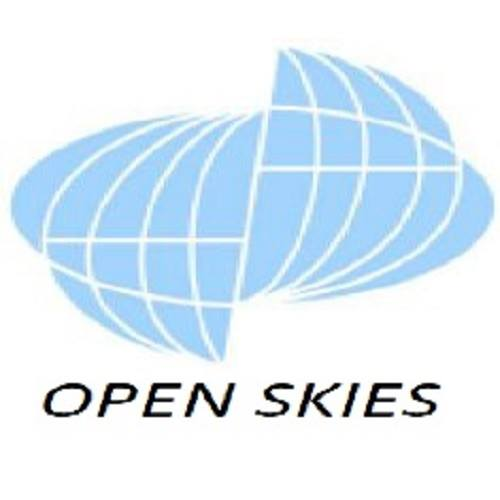

| 02/2019 – present | Land Surveyor |
 |
⦁ Topographic survey with traditional and GNSS instruments ⦁ Laser scanning ⦁ Assisting in utility survey ⦁ Ground penetrating radar survey |
| 02/2019 – present | Land Surveyor |
|
⦁ Topographic survey with traditional and GNSS instruments ⦁ Laser scanning ⦁ Assisting in utility survey ⦁ Ground penetrating radar survey |
| 09/2013 – 01/2019 |
GIS Developer Engineer (2015-2019 MGCP Team Leader ) |
|
MoD. Zrínyi Mapping and Communication Servicing Non-profit Ltd. Digital mapping department, MGCP team |
 |
⦁ Developing new processing methods and techniques for GIS - related tasks. ⦁ Preparing, digitalizing, capturing and inspecting. cells/segments in the Multinational Geospatial Co-production Program (MGCP), and coordinating the work of the operators. ⦁ Quality control on GIS based vector databases. ⦁ Represent the company on international technical forums and conferences, creating presentations. |
| 10/2012 – 09/2013 | Technical Evaluation Engineer, Airborne Survey Systems Operator |
|
MoD. Zrínyi Mapping and Communication Servicing Non-profit Ltd. Air photographer subdivision, Open Skies sensor team |
|  |
⦁ Planning and carrying out topographical observation flights. ⦁ Operate aerial camera system. ⦁ Land surveying fieldwork tasks with traditional and GNSS instruments. (Leica, Topcon, Trimble, Sokkia). |